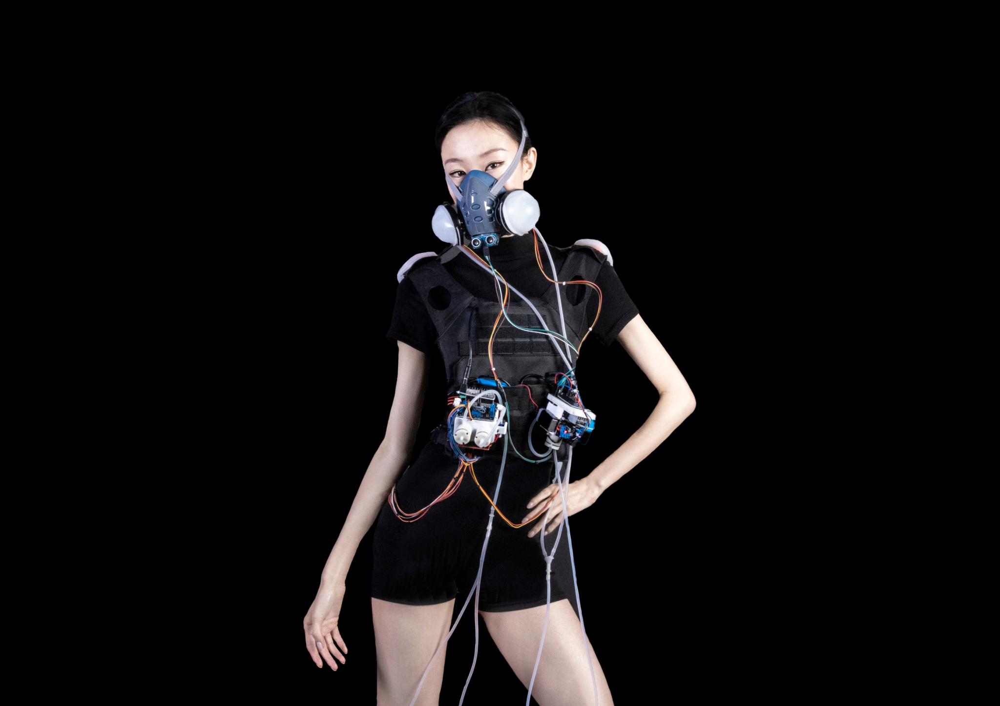
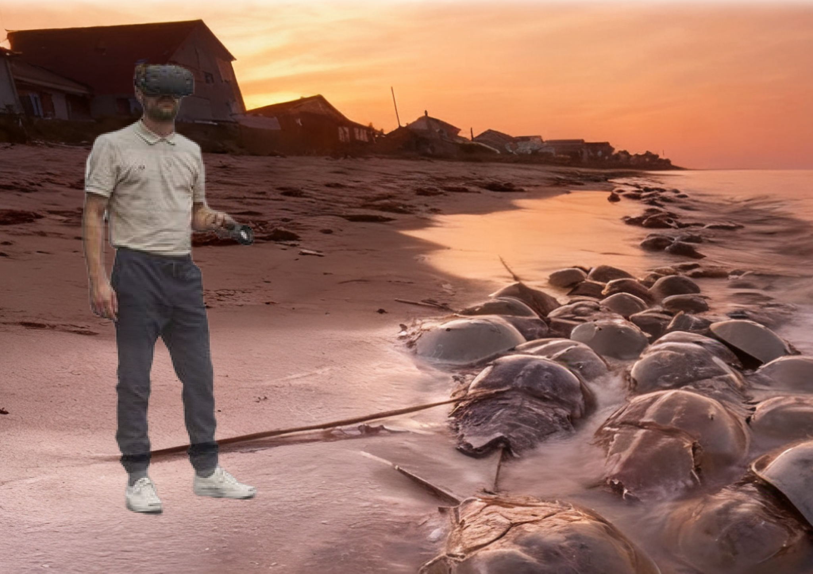
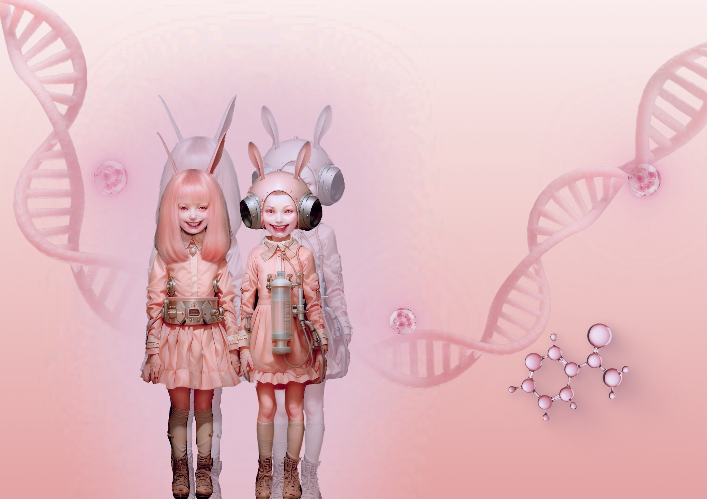

01 / INTERACTIVE WEARABLE · BIO-ART
Carrier / 載體
Carrier is an interactive bio-art wearable exploring the relationship between the human body, technology, and environmental pollution. Inspired by poison dart frog proteins, the wearable functions as an imagined “Toxin-Eating Lung,” using pneumatic movement and LED feedback to make invisible pollutants physically perceptible and encourage reflection on how environmental toxicity enters and affects the body.

02 / VR EXPERIENCE · INTERACTIVE STORYTELLING
Blue Blood Guardian
Blue Blood Guardian is an immersive VR experience exploring the ethical conflict between human survival and biodiversity. Through the story of horseshoe crabs and their role in medicine, players confront the ecological cost of preserving human life.

03 / SPECULATIVE DESIGN · BIOTECHNOLOGY
Kawaii Up Studio
Kawaii Up Studio is a speculative cosmetic surgery concept exploring how biotechnology could reshape beauty standards. Inspired by animal aesthetics, the project imagines biologically integrated “cute organs” created through stem cell and immune technologies, questioning the relationship between cuteness, identity, and the commercialization of the body.